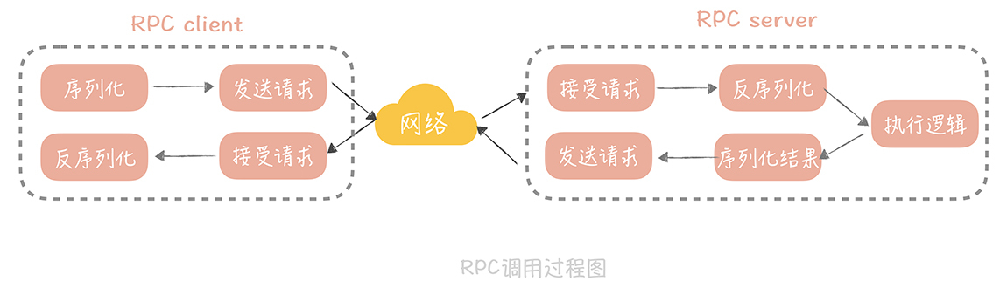

23 RPC 框架：10 万 QPS 下如何实现毫秒级的服务调用？¶
你好，我是唐扬。
在 21 讲和 22 讲中，你的团队已经决定对垂直电商系统做服务化拆分，以便解决扩展性和研发成本高的问题。与此同时，你们在不断学习的过程中还发现，系统做了服务化拆分之后，会引入一些新的问题，这些问题我在上节课提到过，归纳起来主要是两点：
服务拆分单独部署后，引入的服务跨网络通信的问题；
在拆分成多个小服务之后，服务如何治理的问题。
如果想要解决这两方面问题，你需要了解，微服务化所需要的中间件的基本原理，和使用技巧，那么本节课，我会带你掌握，解决第一点问题的核心组件： RPC 框架。 来思考这样一个场景： 你的垂直电商系统的 QPS 已经达到了每秒 2 万次，在做了服务化拆分之后，由于我们把业务逻辑，都拆分到了单独部署的服务中，那么假设你在完成一次完整的请求时，需要调用 4～5 次服务，计算下来，RPC 服务需要承载大概每秒 10 万次的请求。那么，你该如何设计 RPC 框架，来承载如此大的请求量呢？你要做的是：
选择合适的网络模型，有针对性地调整网络参数，以优化网络传输性能；
选择合适的序列化方式，以提升封包、解包的性能。
接下来，我从原理出发，让你对于 RPC 有一个理性的认识，这样你在设计 RPC 框架时，就可以清晰地知道自己的设计目标是什么了。
你所知道的 RPC¶
说到 RPC（Remote Procedure Call，远程过程调用），你不会陌生，它指的是通过网络，调用另一台计算机上部署服务的技术。
而 RPC 框架就封装了网络调用的细节，让你像调用本地服务一样，调用远程部署的服务。你也许觉得只有像 Dubbo、Grpc、Thrift 这些新兴的框架才算是 RPC 框架，其实严格来说，你很早之前就接触到与 RPC 相关的技术了。 比如，Java 原生就有一套远程调用框架 叫做 RMI（Remote Method Invocation）， 它可以让 Java 程序通过网络，调用另一台机器上的 Java 对象的方法。它是一种远程调用的方法，也是 J2EE 时代大名鼎鼎的 EJB 的实现基础。
时至今日，你仍然可以通过 Spring 的“RmiServiceExporter”将 Spring 管理的 bean 暴露成一个 RMI 的服务，从而继续使用 RMI 来实现跨进程的方法调用。之所以 RMI 没有像 Dubbo，Grpc 一样大火，是因为它存在着一些缺陷：
RMI 使用专为 Java 远程对象定制的协议 JRMP（Java Remote Messaging Protocol）进行通信，这限制了它的通信双方，只能是 Java 语言的程序，无法实现跨语言通信；
RMI 使用 Java 原生的对象序列化方式，生成的字节数组空间较大，效率很差。
另一个你可能听过的技术是 Web Service， 它也可以认为是 RPC 的一种实现方式。它的优势是，使用 HTTP+SOAP 协议，保证了调用可以跨语言，跨平台。只要你支持 HTTP 协议，可以解析 XML，那么就能够使用 Web Service。在我来看，它由于使用 XML 封装数据，数据包大，性能还是比较差。
借上面几个例子，我主要是想告诉你， RPC 并不是互联网时代的产物，也不是服务化之后才衍生出来的技术，而是一种规范，只要是封装了网络调用的细节，能够实现远程调用其他服务，就可以算作是一种 RPC 技术了。
那么你的垂直电商项目在使用 RPC 框架之后，会产生什么变化呢？ 在我来看，在性能上的变化是不可忽视的，我给你举个例子。 比方说，你的电商系统中，商品详情页面需要商品数据、评论数据还有店铺数据，如果在一体化的架构中，你只需要从商品库，评论库和店铺库获取数据就可以了，不考虑缓存的情况下有三次网络请求。
但是，如果独立出商品服务、评论服务和店铺服务之后，那么就需要分别调用这三个服务，而这三个服务又会分别调用各自的数据库，这就是六次网络请求。如果你服务拆分的更细粒度，那么多出的网络调用就会越多，请求的延迟就会更长，而这就是你为了提升系统的扩展性，在性能上所付出的代价。
{kind=link}
那么，我们要如果优化 RPC 的性能，从而尽量减少网络调用，对于性能的影响呢？在这里，你首先需要了解一次 RPC 的调用都经过了哪些步骤，因为这样，你才可以针对这些步骤中可能存在的性能瓶颈点提出优化方案。步骤如下： 在一次 RPC 调用过程中，客户端首先会将调用的类名、方法名、参数名、参数值等信息，序列化成二进制流；
然后客户端将二进制流，通过网络发送给服务端；
服务端接收到二进制流之后，将它反序列化，得到需要调用的类名、方法名、参数名和参数值，再通过动态代理的方式，调用对应的方法得到返回值；
服务端将返回值序列化，再通过网络发送给客户端；
客户端对结果反序列化之后，就可以得到调用的结果了。过程图如下：
{kind=link}
从这张图中你可以看到，有网络传输的过程，也有将请求序列化和反序列化的过程， 所以，如果要提升 RPC 框架的性能，需要从 网络传输和序列化 两方面来优化。
如何提升网络传输性能¶
在网络传输优化中，你首要做的，是选择一种高性能的 I/O 模型。所谓 I/O 模型，就是我们处理 I/O 的方式。而一般单次 I/O 请求会分为两个阶段，每个阶段对于 I/O 的处理方式是不同的。
首先，I/O 会经历一个等待资源的阶段， 比方说，等待网络传输数据可用，在这个过程中我们对 I/O 会有两种处理方式：
阻塞。指的是在数据不可用时，I/O 请求一直阻塞，直到数据返回；
非阻塞。指的是数据不可用时，I/O 请求立即返回，直到被通知资源可用为止。
然后是使用资源的阶段， 比如说从网络上接收到数据，并且拷贝到应用程序的缓冲区里面。在这个阶段我们也会有两种处理方式：
同步处理。指的是 I/O 请求在读取或者写入数据时会阻塞，直到读取或者写入数据完成；
异步处理。指的是 I/O 请求在读取或者写入数据时立即返回，当操作系统处理完成 I/O 请求，并且将数据拷贝到用户提供的缓冲区后，再通知应用 I/O 请求执行完成。
将这两个阶段的四种处理方式，做一些排列组合，再做一些补充，就得到了我们常见的五种 I/O 模型：
同步阻塞 I/O
同步非阻塞 I/O
同步多路 I/O 复用
信号驱动 I/O
异步 I/O
这五种 I/O 模型，你需要理解它们的区别和特点，不过在理解上你可能会有些难度，所以我来做个比喻，方便你理解。
我们来把 I/O 过程比喻成烧水倒水的过程，等待资源（就是烧水的过程），使用资源（就是倒水的过程）：
如果你站在炤台边上一直等着（等待资源）水烧开，然后倒水（使用资源），那么就是同步阻塞 I/O；
如果你偷点儿懒，在烧水的时候躺在沙发上看会儿电视（不再时时刻刻等待资源），但是还是要时不时的去看看水开了没有，一旦水开了，马上去倒水（使用资源），那么这就是同步非阻塞 I/O；
如果你想要洗澡，需要同时烧好多壶水，那你就在看电视的间隙去看看哪壶水开了（等待多个资源），哪一壶开了就先倒哪一壶，这样就加快了烧水的速度，这就是同步多路 I/O 复用；
不过你发现自己总是跑厨房去看水开了没，太累了，于是你考虑给你的水壶加一个报警器（信号），只要水开了就马上去倒水，这就是信号驱动 I/O；
最后一种就高级了，你发明了一个智能水壶，在水烧好后自动就可以把水倒好，这就是异步 I/O。
这五种 I/O 模型中最被广泛使用的是 多路 I/O 复用， Linux 系统中的 select、epoll 等系统调用都是支持多路 I/O 复用模型的，Java 中的高性能网络框架 Netty 默认也是使用这种模型。所以，我们可以选择它。
那么，选择好了一种高性能的 I/O 模型，是不是就能实现，数据在网络上的高效传输呢？其实并没有那么简单，网络性能的调优涉及很多方面，其中不可忽视的一项就是网络参数的调优， 接下来，我带你了解其中一个典型例子。当然，你可以结合网络基础知识，以及成熟 RPC 框架（比如 Dubbo）的源码来深入了解，网络参数调优的方方面面。
在之前的项目中， 我的团队曾经写过一个简单的 RPC 通信框架。在进行测试的时候发现，远程调用一个空业务逻辑的方法时，平均响应时间居然可以到几十毫秒，这明显不符合我们的预期，在我们看来，运行一个空的方法，应该在 1 毫秒之内可以返回。于是，我先在测试的时候使用 tcpdump 抓了包，发现一次请求的 Ack 包竟然要经过 40ms 才返回。在网上 google 了一下原因，发现原因和一个叫做 tcp_nodelay 的参数有关。这个参数是什么作用呢？ tcp 协议的包头有 20 字节，ip 协议的包头也有 20 字节，如果仅仅传输 1 字节的数据，在网络上传输的就有 20 + 20 + 1 = 41 字节，其中真正有用的数据只有 1 个字节，这对效率和带宽是极大的浪费。所以在 1984 年的时候，John Nagle 提出了以他的名字命名的 Nagle`s 算法，他期望：
如果是连续的小数据包，大小没有一个 MSS（Maximum Segment
Size，最大分段大小），并且还没有收到之前发送的数据包的 Ack 信息，那么这些小数据包就会在发送端暂存起来，直到小数据包累积到一个 MSS，或者收到一个 Ack 为止。
这原本是为了减少不必要的网络传输，但是如果接收端开启了 DelayedACK（延迟 ACK 的发送，这样可以合并多个 ACK，提升网络传输效率），那就会发生， 发送端发送第一个数据包后，接收端没有返回 ACK，这时发送端发送了第二个数据包，因为 Nagle`s 算法的存在，并且第一个发送包的 ACK 还没有返回，所以第二个包会暂存起来。而 DelayedACK 的超时时间，默认是 40ms，所以一旦到了 40ms，接收端回给发送端 ACK，那么发送端才会发送第二个包，这样就增加了延迟。 解决的方式非常简单： 只要在 socket 上开启 tcp_nodelay 就好了，这个参数关闭了 Nagle`s 算法，这样发送端就不需要等到上一个发送包的 ACK 返回，直接发送新的数据包就好了。这对于强网络交互的场景来说非常的适用，基本上，如果你要自己实现一套网络框架，tcp_nodelay 这个参数最好是要开启的。
选择合适的序列化方式¶
在对网络数据传输完成调优之后，另外一个需要关注的点就是，数据的序列化和反序列化。 通常所说的序列化，是将传输对象转换成二进制串的过程，而反序列化则是相反的动作，是将二进制串转换成对象的过程。
从上面的 RPC 调用过程中你可以看到，一次 RPC 调用需要经历两次数据序列化的过程，和两次数据反序列化的过程，可见它们对于 RPC 的性能影响是很大的，那么我们在选择序列化方式的时候需要考虑哪些因素呢？ 首先需要考虑的肯定是性能嘛，性能包括时间上的开销和空间上的开销，时间上的开销就是序列化和反序列化的速度，这是显而易见需要重点考虑的，而空间上的开销则是序列化后的二进制串的大小，过大的二进制串也会占据传输带宽，影响传输效率。
除去性能之外，我们需要考虑的是它是否可以跨语言，跨平台，这一点也非常重要，因为一般的公司的技术体系都不是单一的，使用的语言也不是单一的，那么如果你的 RPC 框架中传输的数据只能被一种语言解析，那么这无疑限制了框架的使用。
另外，扩展性也是一个需要考虑的重点问题。你想想，如果对象增加了一个字段就会造成传输协议的不兼容，导致服务调用失败，这会是多么可怕的事情。
综合上面的几个考虑点，在我看来，我们的序列化备选方案主要有以下几种： 首先是大家熟知的 JSON，它起源于 JavaScript，是一种最广泛使用的序列化协议，它的优势简单易用，人言可读，同时在性能上相比 XML 有比较大的优势。
另外的 Thrift 和 Protobuf 都是需要引入 IDL（Interface description language）的，也就是需要按照约定的语法写一个 IDL 文件，然后通过特定的编译器将它转换成各语言对应的代码，从而实现跨语言的特点。Thrift 是 Facebook 开源的高性能的序列化协议，也是一个轻量级的 RPC 框架； Protobuf 是谷歌开源的序列化协议。它们的共同特点是，无论在空间上还是时间上都有着很高的性能，缺点就是由于 IDL 存在带来一些使用上的不方便。
那么，你要如何选择这几种序列化协议呢？这里我给你几点建议：
如果对于性能要求不高，在传输数据占用带宽不大的场景下，可以使用 JSON 作为序列化协议；
如果对于性能要求比较高，那么使用 Thrift 或者 Protobuf 都可以。而 Thrift 提供了配套的 RPC 框架，所以想要一体化的解决方案，你可以优先考虑 Thrift；
在一些存储的场景下，比如说你的缓存中存储的数据占用空间较大，那么你可以考虑使用 Protobuf 替换 JSON，作为存储数据的序列化方式。
课程小结¶
为了优化 RPC 框架的性能，本节课，我带你了解了网络 I/O 模型和序列化方式的选择，它们是实现高并发 RPC 框架的要素，总结起来有三个要点：
-
选择高性能的 I/O 模型，这里我推荐使用同步多路 I/O 复用模型；
-
调试网络参数，这里面有一些经验值的推荐。比如将 tcp_nodelay 设置为 true，也有一些参数需要在运行中来调试，比如接受缓冲区和发送缓冲区的大小，客户端连接请求缓冲队列的大小（back log）等等；
-
序列化协议依据具体业务来选择。如果对性能要求不高，可以选择 JSON，否则可以从 Thrift 和 Protobuf 中选择其一。
在学习本节课的过程中，我建议你阅读一下，成熟的 RPC 框架的源代码。比如，阿里开源的 Dubbo，微博的 Motan 等等，理解它们的实现原理和细节，这样你会更有信心维护好你的微服务系统；同时，你也可以从优秀的代码中，学习到代码设计的技巧，比如说 Dubbo 对于 RPC 的抽象，SPI 扩展点的设计，这样可以有助你提升代码能力。
当然了，本节课我不仅仅想让你了解 RPC 框架实现的一些原理，更想让你了解在做网络编程时，需要考虑哪些关键点，这样你在设计此类型的系统时，就会有一些考虑的方向和思路了。